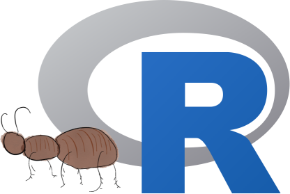

| Branch |  |
 |
|---|---|---|
master |
 |
|
develop |
 |
tracerer, ‘Tracer for R’ is an R package to work with BEAST2 output files.

tracerer logo
tracerer is part of the babette package suite:
-
beautiercreates BEAST2 input (.xml) files. -
beastierruns BEAST2 -
mauricer: install BEAST2 packages -
tracererpastes BEAST2 output (.log,.trees, etc) files.
Related R packages:
-
lumier: Shiny app to help create the function call needed -
BEASTmasteR: tip-dating using fossils as dated terminal taxa -
RBeast: misc other things -
tracerer_on_windows: verifiestracererbuilds on Windows
Example
library(tracerer)
# Obtain an example log file its name
filename <- get_tracerer_path("beast2_example_output.log")
# Parse that log file
beast_log_full <- parse_beast_tracelog_file(filename)
# Remove the burn-in
beast_log <- remove_burn_ins(
beast_log_full,
burn_in_fraction = 0.1
)
# Calculates the effective sample sizes of all parameter estimates
esses <- calc_esses(beast_log, sample_interval = 1000)Installation
You can install:
- (recommended) The CRAN version
- The stable development version
- The bleeding edge development version
Stable development version
Install the tracerer master branch using remotes:
remotes::install_github("ropensci/tracerer")Bleeding edge development version
Install the tracerer develop branch using remotes:
remotes::install_github("ropensci/tracerer", ref = "develop")FAQ
See FAQ
There is a feature I miss
See CONTRIBUTING, at Submitting use cases
I want to collaborate
See CONTRIBUTING, at ‘Submitting code’
I think I have found a bug
See CONTRIBUTING, at ‘Submitting bugs’
References
Article about babette:
- Bilderbeek, Richèl JC, and Rampal S. Etienne. “
babette: BEAUti 2, BEAST 2 and Tracer for R.” Methods in Ecology and Evolution (2018). https://doi.org/10.1111/2041-210X.13032
FASTA files anthus_aco.fas and anthus_nd2.fas from:
- Van Els, Paul, and Heraldo V. Norambuena. “A revision of species limits in Neotropical pipits Anthus based on multilocus genetic and vocal data.” Ibis.